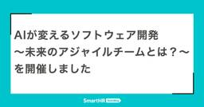
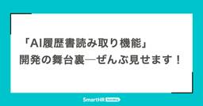
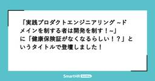

SmartHR Tech Blog
https://tech.smarthr.jp/
SmartHR 開発者ブログ
フィード

「AIが変えるソフトウェア開発 〜未来のアジャイルチームとは？〜」を開催しました
SmartHR Tech Blog
こんにちは！ SmartHRでアジャイルコーチしたり、筋トレしたりしてるkouryouです。 2025年3月14日(金)に、社内外のエンジニアやアジャイルコーチ、マネージャーをお招きして「AIが変えるソフトウェア開発 〜未来のアジャイルチームとは？〜」というイベントを開催しました。 本記事では、そのイベント内容をレポートしながら、SmartHRがどのようにAIとアジャイルを掛け合わせ、さらなる飛躍を目指しているかをお伝えします。 参加者数 当日の参加者は49名でした！ 多くの方にお越しいただき、大変ありがたく思います。 開幕 今年SmartHRに入社したアジャイルコーチの和田さんが司会となり、…
1日前
RubyKaigiの公式スケジュールアプリ今年もやります、デザインを大幅刷新しましたよ！ 1
1
SmartHR Tech Blog
こんにちは、プロダクトエンジニアのkinoppydです。ついにやってきましたね、RubyKaigiの季節ですよ。あまりにもRubyKaigiが待ち遠しくて、もう気持ちは松山の鯛みたいなもんですな。 さて、RubyKaigiでは毎年公式スケジュールアプリ Schedule.select を提供しているSmartHRですが、今年も出ますよスケジュールアプリが！ rubykaigi.smarthr.co.jp でもまだ、2024年のバージョンですね！ いま2025年版を最終調整中です。今回は、そんな2025年版の先取り解説です。 Schedule.select 2025 公式スケジュールアプリはOS…
3日前
Hello, Playwright!! 〜プログラミング初心者2人が取り組みを振り返る〜 1
SmartHR Tech Blog
こんにちは！QAエンジニアのetoとshibachokuです。本記事は品質保証部連載第11弾です。今回はプログラミング初心者である私たちがPlaywrightにチャレンジし、実施してきた取り組みについて語った内容をブログにしました。初心者あるあるな話が結構出たのではないかと思います。 インタビューアーは品質保証部マネージャーのtarappoさんです。 ※tarappoさんについては以下の記事をぜひご覧ください。 tech.smarthr.jp 自己紹介 tarappo：品質保証部のtarappoです。今回は労務ユニットBのメンバーが最近すすめていたPlaywight周りのことについてお二人と話…
4日前

「AI履歴書読み取り機能」開発の舞台裏 ── ぜんぶ見せます！ 1
SmartHR Tech Blog
こんにちは、AIインテグレーションユニットの木村です。 この記事では、AIインテグレーションユニットで行ってきた「AI履歴書読み取り機能」開発の舞台裏を、検証プロセスや得られた知見を中心に紹介します。 目次 目次 「AI履歴書読み取り機能」の開発理由 「AI履歴書読み取り機能」のコンセプト 「AI履歴書読み取り機能」の技術検証 技術検証のやり方 各LLMモデルへの期待値と検証後の評価 GPT-4o ── 高い期待値で始めたものの、思ったほどの精度が出ず GPT-4o mini ── 画像を添付した際にトークン数が跳ね上がり、そこまで安くならなかった Gemini 1.5 Pro ── PDFを…
4日前

「実践プロダクトエンジニアリング ~ドメインを制する者は開発を制す！~」 に「健康保険証がなくなるらしい！？」というタイトルで登壇しました！ 1
SmartHR Tech Blog
こんにちは。届出書類機能を開発しているqwyngです。 2025年3月10日に、SmartHRで開催された「実践プロダクトエンジニアリング ~ドメインを制する者は開発を制す！~」に「健康保険証がなくなるらしい！？」というタイトルで登壇しました！ この記事では、イベントの模様と登壇内容についてレポートします。 「実践プロダクトエンジニアリング ~ドメインを制する者は開発を制す！~」とは 実践プロダクトエンジニアリングは、実際の経験に基づいた具体的な事例や知見を共有しながら、今後のプロダクト開発に活かせる学びを得ることを目標にしたイベントです。 mosh.connpass.com 登壇内容 Sma…
5日前

入社してわかったSmartHRのフロントエンドエンジニア
SmartHR Tech Blog
こんにちは、SmartHR プロダクトエンジニアの chanMisa と ushiboy です。 この記事では、SmartHR に入社したフロントエンドエンジニアの視点から、日々の業務や取り組み、開発体験を通して感じたギャップや魅力をお伝えします。 共同執筆者である私たち 2 人の掛け合いを通して、よりリアルな開発現場の様子をお届けします。 SmartHR で働くフロントエンドエンジニアの仕事について参考になれば幸いです。 多様なチームとフロントエンドエンジニアの役割 チームの構成 フロントエンドエンジニアの役割 開発環境・ライブラリなどの技術スタック 開発環境と技術スタック チーム横断の情報…
9日前
第10回SmartHR LT大会レポート ── 開催2年目突入！ 2025年1発目！
SmartHR Tech Blog
こんにちは!SmartHRでプロダクト横断基盤開発チームにて開発をしている rock_san です。 この記事では、2025年2月21日に開催した第10回SmartHR LT大会の模様を、採用管理の開発をしているmasaruさんと一緒にお届けします。 今回は、2025年になってからはじめてのLT大会となりました。LTカテゴリーより過去のLT大会についても確認できるるので、よかったら本記事とあわせてご覧ください。 SmartHR LT大会とは 参加者情報 発表レポート LGTM画像のすゝめ サブスク管理って？ 調べてみました わん うぃーく with Rails 7.1 → 7.2 → 8.0 …
11日前
Roppongi.rb #27 がSmartHRで開催されました
SmartHR Tech Blog
こんにちは！プロダクトエンジニアのmatsugenです。 この記事は、2025年2月13日に開催されたRoppongi.rb #27に協賛し、SmartHR本社8Fのイベントスペースを会場提供した際のレポートです。 Roppongi.rbとは Roppongi.rbは六本木周辺のRubyistが中心となりRubyistのためのミートアップを企画したりするRubyコミュニティです。 roppongirb.connpass.com SmartHRでの開催は、2024年12月に続いて3回目となります。 tech.smarthr.jp 参加者数 当日の参加者は18名（LT登壇者6名 + 一般参加者12…
12日前
DifyによるAIチャットボットへのWeb検索機能の追加
SmartHR Tech Blog
こんにちは、コーポレートエンジニアリング部IT企画ユニットで社内のAI活用推進を担当している @koipaiです。 SmartHRでは、社内の誰もがSlack上で手軽に利用できるAIチャットボット「Johsys AI」を運用しています。 今回は、昨年末に紹介したバージョンからの機能拡張として、Web検索を回答に反映する機能を追加した事例についてご紹介します。 tech.smarthr.jp 「情シスのAI」としての価値向上に向けた取り組み Johsys AIは、社内のAI活用のハードルを下げるため、調べ物や要約などの日常業務を支援する汎用的なLLMアプリとして開発されました。 内製を選ぶ意義 …
13日前
「サイボウズ x SmartHR アジャイル文化醸成への挑戦 ～ 実践と学び ～」を開催しました！
SmartHR Tech Blog
暖かくなったり寒くなったりしている今日この頃、体調管理に気をつけたいプロダクトエンジニアのnomusonです。 2025年02月28日（金）に、「サイボウズ x SmartHR アジャイル文化醸成への挑戦 ～ 実践と学び ～ 」を開催しました！ 「サイボウズ x SmartHR アジャイル文化醸成への挑戦 ～ 実践と学び ～」とは？ 「サイボウズ x SmartHR アジャイル文化醸成への挑戦 ～ 実践と学び ～」は、サイボウズ株式会社と株式会社SmartHRの共同開催イベントの第2弾です。 今回のイベントでは、アジャイル文化を根付かせるための取り組みや、実際に直面した課題とその解決策について…
16日前
AI企業になる第一歩として学会協賛を始めました
SmartHR Tech Blog
こんにちは！SmartHR でシニアエンジニアリングマネージャーをやっている yoshinarl です。 SmartHR ではすでに「従業員サーベイの回答要約機能」や「AI履歴書読み取り機能」のようにAIを活用した機能を提供しています。 また、SmartHR では MLエンジニアや MLOpsエンジニアのように職種の幅を広げてAI人材の採用を始めており、今後2年程度で10倍の規模へ拡充 することも視野に入れています。 しかし、SmartHR のAI 活用は国内SaaS他社と比べてもまだ伸び代がある状態で、今後ますます積極的に情報収集や仮説検証を進めていく必要があります。 そこでまずは学会で発表…
17日前
AI/機械学習によるカスタマーサポートの回答予測 ── 試行錯誤の歴史
SmartHR Tech Blog
こんにちは！SmartHRのカスタマーサポートで技術導入を推進している kano です。 私の所属している技術推進ユニットでは、カスタマーサポートの効率化や品質向上を目指して、様々な取り組みをしています。 カスタマーサポートは、AI/機械学習との親和性がとても高く用途が多いので、私たちも積極的に取り組んでいます。今回は、取り組みの一部をご紹介したいと思います。 目次 目次 問い合わせに素早く回答したい！ 生成AIによる回答の生成 やったこと 結果 教訓 これから マクロのサジェスト - 特定のプロダクトでの回答予測 やったこと 結果 教訓 マクロのサジェスト - プロダクト全体での回答の予測 …
17日前
「OpenTelemetryって本当に必要？ 今エンジニアが知っておくべきオブザーバビリティとは」に登壇しました！
SmartHR Tech Blog
こんにちは。プロダクトエンジニアの@ymtdzzzです。 2025年2月25日に、#Offers_DeepDiveのオンラインイベント「OpenTelemetryって本当に必要？今エンジニアが知っておくべきオブザーバビリティとは」に登壇しました！ この記事では、イベントの模様と登壇内容についてレポートします。 イベント概要 このイベントでは、昨今注目を集めているOpenTelemetryを中心に、オブザーバビリティの基本概念から実践的な運用方法まで幅広い内容を取り上げました。 offers-jp.connpass.com アーカイブも配信中です。 offers.jp 私と@sumiren_tさ…
18日前
何を品質と定義するか、部署を越えて言語化していきたい── SmartHR品質保証部チーフ座談会
SmartHR Tech Blog
品質保証部のチーフ（プレイングマネージャー）と聞くとどういった仕事を思い浮かべるでしょうか。 いわゆる「リソース管理」を想像する方もいらっしゃるかもしれません。それも在り方のひとつですが、SmartHRのチーフの役割は少し異なります。 この記事では、SmartHRの品質保証部でチーフを務める3名へのインタビューを通じて、役割と期待される成果を紐解いていきます。 インタビュアーは品質保証部マネージャーのtarappoさん（@tarappo）です。tarappoさんについては以下の記事をぜひご覧ください。 tech.smarthr.jp 目次 自己紹介、チーフ就任の経緯 品質保証部のチーフは何をす…
18日前
「とりあえずモブプロ」をやめて起きた変化と課題
SmartHR Tech Blog
こんにちは〜 人事評価機能を開発しているプロダクトエンジニアのnekoです。 人事評価機能の開発チームでは、2024年10月頃までモブプログラミングを主体とした手法で開発を行っていました。 チームにモブプログラミングを行うというルールがあり、大半の開発をモブプロで行っていたのですが、モブプロをうまく行えておらず、ソロ開発をメインに切り替えたときに起きた変化と課題についてお話します。 モブプログラミングそのものよりは、チームの課題多めで、モブプロを批判する意図はないので悪しからず。 モブプログラミングを行っていた背景 私は2024年4月に入社したのでそれ以前のことは詳しく分からないのですが、少な…
19日前
エンジニア経験を活かす！ SmartHRのTPMで広がるキャリア ── TPMインタビュー
SmartHR Tech Blog
SmartHRでは、マルチプロダクト戦略推進のため2023年にプロダクト基盤組織を立ち上げ、新たに ”テクニカルプロダクトマネージャー（以下、TPM）” というポジションを作りました。 エンジニアからプロダクトマネージャー（以下、PM）に転身し、社内でTPMとして働く2人に、TPMになったきっかけや現在の仕事のこと、キャリアについて聞いてみました。 SmartHRのTPMについては是非以下の記事もご覧ください！ エンジニアに知ってほしい！マルチプロダクト戦略を支えるSmartHRのテクニカルプロダクトマネージャーというポジション kaiya(左)：データ基盤のTPM / yuya(右)：課金基…
20日前
【QAエンジニア考案】スクラムチームの品質保証を強化する「不安ニングポーカー」
SmartHR Tech Blog
こんにちは！QAエンジニアのhigesawaとkaomiです。私達は労務ユニットAに所属しており、開発チームの品質保証を支援する役割を担っています。品質保証部連載第10弾である今回の記事では、私達が課題を解決するために考案した「不安ニングポーカー」を紹介します。 品質保証活動における課題感 労務ユニットAは、特定の開発チームに属さず、複数の開発チームを横断して品質保証活動を行なっています*1。重要な業務の一つとして、各開発チームからの品質保証に関する相談や依頼に対応し、ノウハウ提供や実業務のサポートを行なっています。この業務を進めていくうちに開発チームから、「QAチームとの関わり方の判断基準を…
22日前
Rails Girls Tokyo 17th にコーチ/スポンサーとして参加しました！
SmartHR Tech Blog
Hello, World! SmartHRのプロダクトエンジニアのりさきゃんです。 2025年2月21日から22日に、Rails Girls Tokyo 17thに参加してきました。 Rails Girlsに参加したみなさん Rails Girlsとは？ Rails Girlsは、女性がプログラミングを学び、技術コミュニティに参加するための一歩となるようなワークショップです。世界各地で行われており、東京では17回目の開催です。高校生、社会人、主婦……と様々な女性が参加し、RubyやRailsといったプログラミング言語について、OSSについて、インターネットの仕組みについて、現役のエンジニアから…
24日前
PSIRTを立ち上げました！プロダクトセキュリティを組織的に強化する仕組みづくりに向けて
SmartHR Tech Blog
こんにちは。テクノロジーマネジメント本部でプロダクトセキュリティエンジニアをしているsasakki-です。 2025年1月から、プロダクト全体のセキュリティ向上に責任を持つチームとして、PSIRT（Product Security Incident Response Team）を立ち上げました。 PSIRTの立ち上げ背景、目指している姿、そして具体的な取り組みについて紹介します。 立ち上げたばかりのチームですが、SmartHRのPSIRTについて知っていただけたら幸いです。 PSIRTとは はじめに、PSIRTとは何かと、SmartHRで採用した理由を簡単に紹介します。 PSIRTとは、組織が…
24日前
SWRのプリフェッチを利用してパフォーマンスとアクセシビリティをまとめて改善！
SmartHR Tech Blog
こんにちは！SmartHRプロダクトエンジニアのhimiです。 SWRのプリフェッチ機能を利用してパフォーマンスとアクセシビリティを改善することができたので、その内容を簡単に紹介します。 SWRのプリフェッチ機能 SWRとは、キャッシュベースの状態管理ライブラリです。 swr.vercel.app SWRを利用することで、フェッチ結果のレスポンスの状態管理を簡単に行うことができます。 同じような並びのライブラリとして、TanStack QueryやGraphQL向けのApollo Clientなどがあります。 SWRには、プリフェッチ機能が備わっています。 プリフェッチ機能を使うと、必要になる…
1ヶ月前
Prompt flowの良いところ、難しいところ ── 使ってみてわかった！
SmartHR Tech Blog
こんにちは！SmartHRでAIプロダクト開発をしている@nukosukeです。 近年、様々な企業でLLMを使ったアプリケーション開発を模索しています。 SmartHRもその1つで、AIプロダクト開発チームではLLMを使ったプロダクトを模索しています。 LLM関連のツールは枚挙にいとまがないほどありますが、AIプロダクト開発チームではPrompt flowというツールを使っていました。 今回は、AIプロダクト開発チームでのPrompt flowを使って、LLMにアプリケーションを評価させるLLM as a Judgeを使った経験を下記のラインナップで紹介します。 注意事項 Prompt flo…
1ヶ月前
「EMConf JP 2025非公式懇親会」を開催します！
SmartHR Tech Blog
EMConf JP 2025の熱気をそのままに、カジュアルに交流できる場を用意しました！ 2025年2月27日（木）18時15分から、もうやんカレー 西新宿ダイニング店 様にて、「EMConf JP 2025非公式懇親会」を開催します！会場から徒歩1分、貸切です！ 本イベントは、EMConf JP 2025にシルバースポンサーとして協賛し、公式懇親会スポンサーも務める株式会社SmartHR主催の非公式サブイベントです。 2025.emconf.jp moyan-nishi-shinjyuku-diving.foodre.jp SmartHRが非公式懇親会を開催する理由 EMConf JP 20…
1ヶ月前
不確実性の高いフィーチャー開発においてやってよかったこと3選
SmartHR Tech Blog
こんにちは！SmartHR プロダクトエンジニアの @ron です。 ソフトウェア開発では、不確実性の高いフィーチャーを開発する場面が少なくありません。特に、新規機能や大きな変更を伴う開発では、仕様が固まりきっていなかったり、顧客の反応が予測しづらかったりすることが多く、進め方に悩むこともあります。 この記事では、私たちのチームが不確実性の高いフィーチャー開発に取り組む中で「やってよかったこと」を3つ紹介します。 仮説検証を小さく素早く回す 不確実性が高い場合、大きな実装を一気に進めるのはリスクが高くなります。そこで、次のようなアプローチを取りました。 チケットの進め方を調整し、毎週スプリント…
1ヶ月前
PythonでAzure AI Searchのインデックスを構築する方法
SmartHR Tech Blog
PythonでAzure AI Searchのインデックスを構築する方法SmartHRでAIプロダクトの開発をしているmizunaoです！現在SmartHRでは、LLM（Large Language Model）を活用したプロダクト開発に取り組んでいます。この記事では、その一環として取り組んだ「PythonでAzure AI Searchのインデックスを構築する方法」を紹介します。 Azure AI Searchとは？ Azure AI SearchはAzureが提供する検索サービスで、全文検索、ベクトル検索、ハイブリッド検索など、様々な検索ソリューションに対応しています。検索に使用するファイ…
1ヶ月前
関西エンジニアのLT会「第二回 唐揚げ会」を開催しました！
SmartHR Tech Blog
こんにちは。プロダクトエンジニアのゆきです。 2025/01/17に、大阪市内のMUIC Kansaiで開催された「第二回 唐揚げ会」に協賛しました。 この記事では、イベントの模様についてレポートします。 唐揚げ会とは 唐揚げ会とは、関西のエンジニアの交流を目的に、ラフにテックな話題などについて話すイベントです。 karaage.connpass.com 第一回の開催レポートについては、関西エンジニアのLT会『第一回 唐揚げ会』を開催しました！ - 虎の穴ラボ技術ブログをご覧ください。 唐揚げ会では、毎回発表のテーマが設定されています。 今回のテーマは「「技術負債」について語ろう！！」でした。…
1ヶ月前
エンジニアに知ってほしい！マルチプロダクト戦略を支えるSmartHRのテクニカルプロダクトマネージャーというポジション
SmartHR Tech Blog
こんにちは！SmartHRのPM組織でプロダクト基盤本部のDirector兼テクニカルプロダクトマネージャーをしている@h1kita です。 SmartHRではマルチプロダクト戦略推進のため、2023年にプロダクト基盤組織を立ち上げました。また、同時期に本領域を推進するため新たに ”テクニカルプロダクトマネージャー（以下、TPM）” というポジションを作りましたが、これまであまり発信できていませんでした。 この記事では、SmartHRにおいてなぜTPMが必要になったのか、実際どんな業務を行い、どんなスキルが求められるのかについて具体例を交えて紹介します。また、キャリアの中でエンジニアからTPM…
1ヶ月前
UXライターがAIを使ってプロダクトを改善する
SmartHR Tech Blog
こんにちは！UXライティング部のhebikoです。 わたしはUXライターとして、SmartHRのプロダクト内のUI文言やヘルプセンターのコンテンツ作成に関わっています。この記事では、非エンジニアであるUXライターがGitHub Copilotを使ってプロダクトを改善する様子をお伝えします。 UXライターによるUI文言の改善活動 UXライターは、UIやヘルプページなどユーザーが触れるコンテンツの品質を高める役割を担っている職種です。 UXライターが果たすべき責任範囲として、「プロダクトを主軸にした、サポートコンテンツも含めた広義の情報設計を担う」というコミットメントが現在掲げられています。そして…
1ヶ月前
コードを自動生成してくれるSmartHR v0を作ってみた
SmartHR Tech Blog
こんにちは。SmartHRでAIプロダクトの開発をしている@nukosukeです。 SmartHRでは2024年12月25日~27日の3日間かけてLLMを使ったハッカソンが行われました。 tech.smarthr.jp ハッカソンではgeminiを使うことがレギュレーションでした。 その中で私は、gemini-2.0-flash-expを使ってSmartHR v0っぽいものを作りました（v0には遠くおよびませんが！笑）。 この記事では、下記のラインナップでSmartHR v0なるものを紹介します。 v0のようなLLMにコード生成させるアプリ開発を考えている人や、gemini-2.0-flash…
1ヶ月前
SmartHRのAIチームにご興味をお持ちの方へ
SmartHR Tech Blog
この記事では、SmartHRのAIチームにご興味をお持ちの方向けに、参考になりそうな情報をまとめます。 募集中のAI関連の職種 現在、以下の職種を募集中です。 MLエンジニア プロダクトエンジニア（AI専任チーム） データ基盤/MLOpsエンジニア AIプロダクトマネージャー 専任チーム「AIインテグレーションユニット」について SmartHRのAI専任チーム「AIインテグレーションユニット」は、各プロダクトチームと連携しながら、AIを用いた機能を実験、開発、運用します。 目指していること 「AIインテグレーションユニット」では、各プロダクトへAI機能を実装し、 バックオフィス、従業員、人事/…
1ヶ月前
SmartHRとAIで、日本のGDPを上げる
SmartHR Tech Blog
みなさんこんにちは、SmartHRのHead of AI 金岡（@ryopenguin） です。 SmartHRでは昨年8月にAI専任組織「AIインテグレーションユニット」を組成しました。そして2025年2月、最初の成果として「AI履歴書読み取り機能」をリリースできました。 しかしこれは、大きな野望の一歩目に過ぎません。私はSmartHRでAIを利用し、本気で日本のGDPを上げたいと思っています。 この記事では、SmartHRのAI利用の方針、そしてなぜそれがGDP増につながるのかをご説明します。 試行錯誤、答えの出ない日々 実は、SmartHRでは2023年のOpenAI GPT-3.5 A…
1ヶ月前